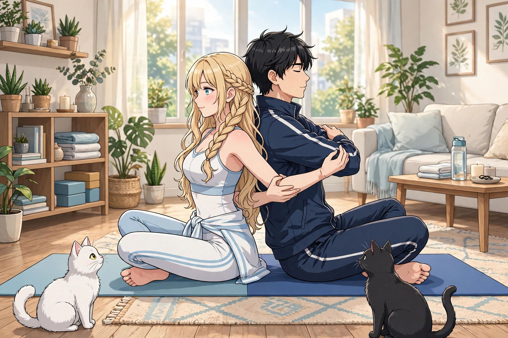
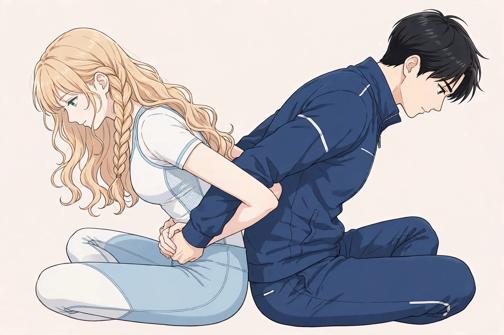
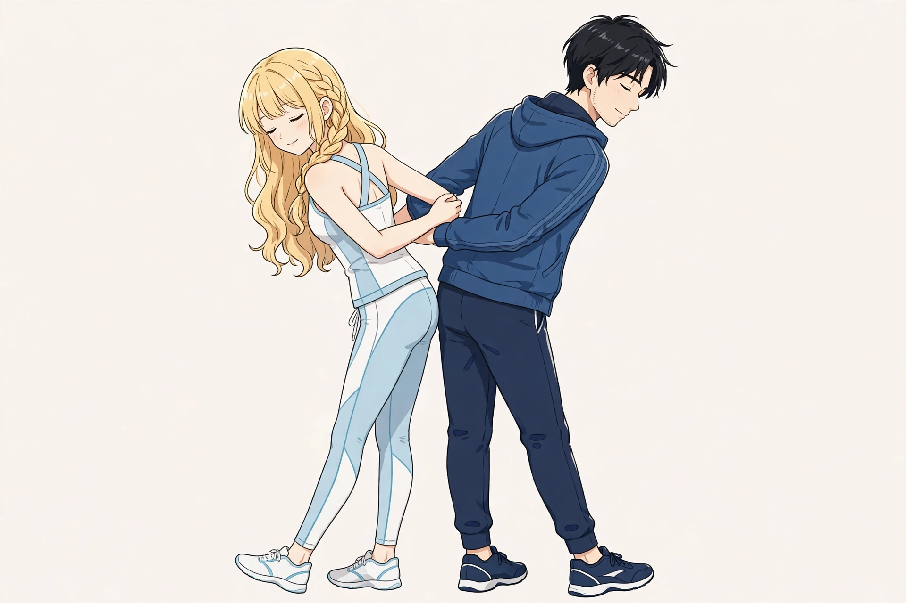

ペア背中ストレッチ｜背中合わせで伸ばす（ペア）

やり方1：座って背中合わせで前に倒す（左右交互・各3回）
- 二人で背中合わせに座り、両膝を軽く曲げて足裏を床につけます
- 腕を組むか、相手の腕を軽く持って、背中同士をぴったりつけます（図1）
- 息を吐きながら、片方がゆっくり前に倒れ、もう片方は背中で支えます。5秒保ってから戻ります
- 役割を交代して、同じように行います

やり方2：立って背中合わせで横へ倒す（左右各3回）
- 二人で背中合わせに立ち、足を肩幅に開きます
- 腕を組むか、相手の手首を軽く持って、背中同士をぴったりつけます（図2）
- 息を吐きながら、二人で一緒に横へゆっくり倒れます。脇腹から背中が伸びる位置で5秒保ちます
- 息を吸いながら中央へ戻し、反対側も同じように行います

服の見え方との関係
背中が伸びると、ブラウスやジャケットの背中のシワが減り、肩のラインがきれいに見えます。服側の選び方は巻き肩・猫背が気になる人の羽織りものの選び方と猫背でジャケットが決まらない人のアウターの選び方にまとめています。
ペアでやるときの安全ルール
- 力をかけすぎない：相手を引っ張ったり押したりしない。自分の体重を預ける程度にする
- 合図を決めておく：「止めて」と言われたら、すぐに動きを止める
- 痛みが出たら中止：背中や腰に痛みが出たら、その日はやらない。痛みが続く場合は医療機関に相談する
- 身長差があるときは、背中の当たる位置を合わせる：背中同士が当たる位置がずれていると、うまく伸びない。座る位置や立つ位置を調整する
- 床が硬い場合はマットを敷く：座って行うときは、ヨガマットや厚手のバスタオルを敷く
効かせるコツと呼吸
前に倒すときも横へ倒すときも、息を吐きながら倒すのが基本です。反動で一気に倒さず、5秒かけて倒すイメージで行ってください。背中同士が離れないように、相手の重みを感じながら行うのがコツです。相手の背中が丸まっていると感じたら、声をかけてあげてください。お互いの背中の丸みに気づくのも、このストレッチの良いところです。呼吸を合わせると、二人で同じリズムで動けて、無理なく続けやすくなります。
もう1つのコツは、肩の力を抜くことです。腕を組むときに肩に力が入ると、背中より肩の方が疲れてしまいます。腕は軽く組むだけにして、肩を下げたまま行ってください。硬い床の上で直接行うとお尻が痛むことがあるので、ヨガマットを敷いて行うのがおすすめです。
回数の増やし方（4週間の目安）
- 1週目：やり方1・やり方2を各3回、週2回
- 2週目：同じ内容を週3回に増やす
- 3週目：保つ時間を5秒から8秒に伸ばす
- 4週目：各5回まで増やす（無理のない範囲で）
背中の張りが強い日は休んでください。痛みではなく「張り」程度なら、倒す角度を小さくして軽く行う形でも大丈夫です。お互いの体調を確認してから始めてください。
出かける前のペア習慣に
出かける前に二人で背中を伸ばすと、ジャケットやワンピースの背中がきれいに見えます。朝の5分でできるので、週末のお出かけ前の習慣にするのがおすすめです。旅行の前日にも、荷物の準備と一緒にやってみてください。背中が伸びた状態で服を着ると、写真に写ったときの後ろ姿もすっきり見えます。ペアストレッチのほかのメニューはペアストレッチのページにまとめています。
この記事のテーマに合う用品


あわせて読みたい：トレーニング用品一覧／背中合わせの姿勢チェックと深呼吸／ペアストレッチ